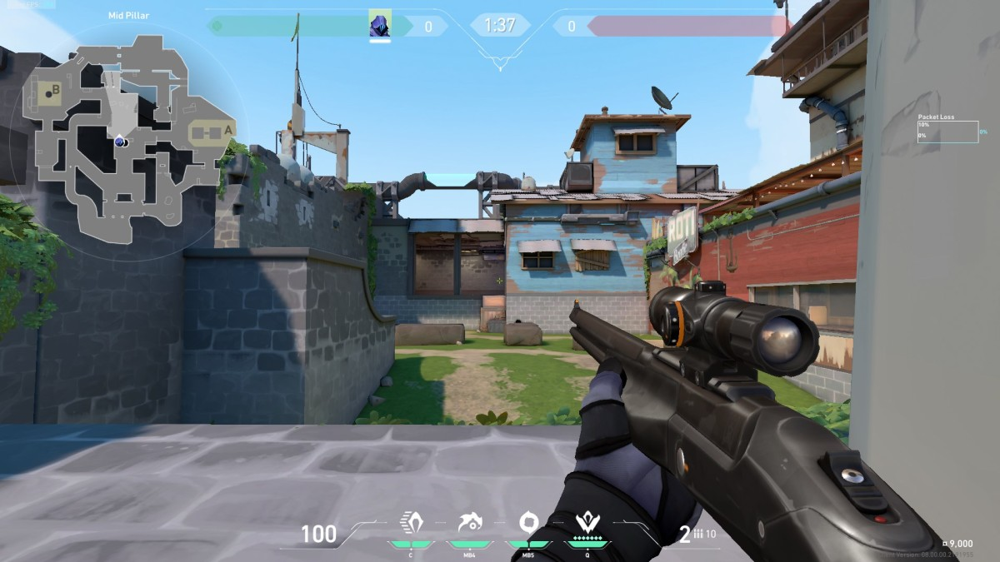

WHAT IS VALORANT?
In this heart-pounding symphony of skill and strategy, Valorant transforms each round into a thrilling narrative, where the diverse objectives mirror the intricacies of the battlefield. As two teams alternate between the roles of Defenders and Attackers, each comprised of five players, they navigate meticulously crafted maps. From intense bomb-centric missions to the strategic conquest of key locations, the stage is set for an ever-evolving saga of tactical prowess and dynamic engagements. Amidst the ebb and flow of every round, Valorant becomes a canvas where the clash of teams unfolds in strategic splendor. As players navigate the diverse landscapes and confront varied objectives, each round emerges as a unique chapter in the dynamic saga of tactical brilliance and competitive mastery.
GAMEPLAY OVERVIEW
Embark on an adrenaline-fueled journey within the heart-pounding symphony of skill and strategy that defines Valorant. As two teams of five players navigate meticulously crafted maps, ranging from intense bomb-centric missions to the strategic conquest of key locations, the stage is set for an ever-evolving saga of tactical prowess and dynamic engagements. Amidst the ebb and flow of every round, Valorant becomes a canvas where the clash of teams unfolds in strategic splendor. As players navigate diverse landscapes and confront varied objectives, each round emerges as a unique chapter in the dynamic saga of tactical brilliance and competitive mastery.
AGENT ABILITIES

The essence of Valorant resides in its iconic characters, known as "agents," each wielding a unique arsenal of abilities. From mending wounds with healing powers to deploying tactical drones, these capabilities hold the potential to sway the tide of battles, offering strategic advantages when employed with finesse. Achieving victory hinges on the artful fusion of agent abilities with traditional weaponry, making every encounter a delicate dance between futuristic prowess and timeless combat precision. In Valorant, the true stars are those who master this synergy, seamlessly integrating agent powers into a cohesive and tactical strategy.In Valorant, the mastery of agent abilities converges with tactical brilliance, creating a gaming experience where victory is not just a goal but a testament to the seamless integration of innovation and traditional combat finesse.

ECONOMIC STRATEGY
Valorant challenges players to make wise economic decisions as they start each round with a limited currency. Balancing the purchase of weapons and abilities becomes crucial, especially in the initial rounds where every credit matters. This strategic element adds a layer of depth, requiring players to think tactically about their arsenal.In the economic intricacies of Valorant, the decisions made with each credit shape not only individual rounds but contribute to the overall narrative of strategic depth and gameplay dynamism.
MAP VARIETY AND ADAPTATION

Immerse yourself in the diverse landscapes of Valorant's maps, each presenting unique challenges and opportunities. Adapting strategies based on the intricacies of each map is essential for success. Whether you're navigating tight corridors or open spaces, every map promises a different tactical adventure.Explore the rich tapestry of Valorant's maps, each offering a distinctive blend of challenges and strategic possibilities. Success demands a nimble approach, adapting strategies to the nuanced intricacies embedded within every map. Whether maneuvering through confined corridors or expansive open spaces, each map unfolds as a unique tactical odyssey, promising thrilling and dynamic adventures.In Valorant, every map invites a unique tactical adventure, where strategic adaptability amidst diverse landscapes becomes the key to success.
ULTIMATE ABILITIES AND POWER PLAYS

Embark on a journey of unparalleled prowess as you unlock the hidden potential within Valorant's ultimate abilities. Each agent's distinctive game-changing skills promise an extraordinary array of tactical possibilities. By strategically deploying these abilities at the opportune moment, players have the exhilarating opportunity to reshape the course of battle, crafting unforgettable moments of intense gameplay. In Valorant, the mastery of these ultimate powers becomes the defining element that elevates every match into an adrenaline-charged spectacle, where strategic brilliance meets heart-pounding action, leaving an indelible mark on the ever-evolving narrative of victory.
PROGRESSION IN VALORANT GAME MODES: ELEVATE YOUR EXPERIENCE
- Unrated
- Competitive
- Swift Play
- Premier
- Spike Rush
- Escalation
- TDM (Team Deathmatch)
Unrated serves as the foundation of Valorant's progression system, offering players the chance to earn one unit of progress for every victorious round. Whether you're honing your skills or experimenting with different strategies, each successful round contributes to your overall progression.
In the heart of ranked gameplay, Competitive mode mirrors Unrated by rewarding one unit of progress for each round won. This mode is where the stakes are high, and players climb the ranks, showcasing their prowess in intense battles.
Swift Play maintains the familiar formula of earning one unit of progress for each round triumph. As the name suggests, this mode provides a swift and engaging gameplay experience, allowing players to make progress while enjoying a fast-paced environment.
Premier mode aligns with the standard progression structure, granting one unit of progress for every round emerged victorious. This mode may introduce additional challenges or unique features, offering a premier gaming experience for players seeking a bit more excitement.
Breaking away from the round-centric model, Spike Rush provides a different progression approach by rewarding two units of progress per completed match. This mode introduces a faster pace and unique twists, making it an efficient way to accumulate progress.
Similar to Spike Rush, Escalation departs from the round-by-round norm. Players earn two units of progress for each completed match in this mode. The diverse weapon progression and dynamic gameplay add a layer of excitement to the progression journey.
In the thrilling chaos of Team Deathmatch, progression takes a match-oriented approach. Players earn two units of progress for every completed TDM match, where teamwork and individual skill meld in a continuous battlefield.
CONTINUOUS UPDATES AND COMMUNITY ENGAGEMENT
Riot Games' commitment to the Valorant community is evident through constant updates, introducing new agents, maps, and enhancements for a fresh gaming experience. Join a community that evolves with the game's dynamic growth. Explore Valorant's diverse agent roster on the Agents page.